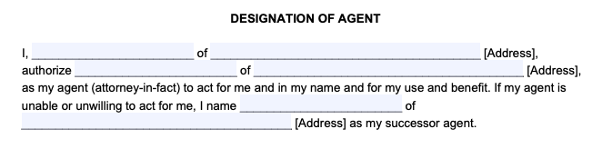
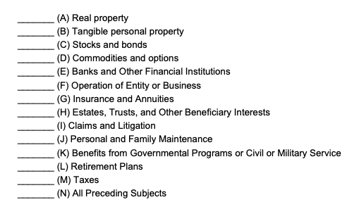
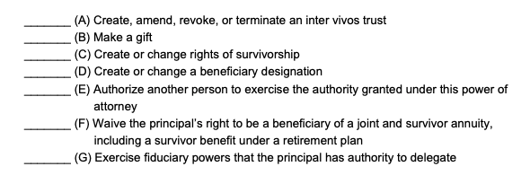
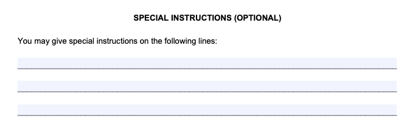
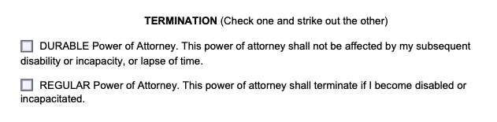
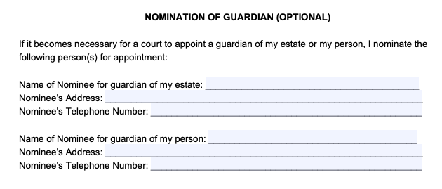
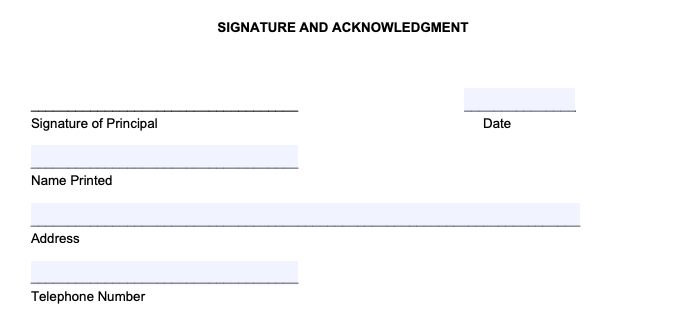

A Power of Attorney (POA) form is a legal document that enables you ( the principal ) to appoint someone you trust ( your agent ) to manage your medical and financial affairs if you cannot do so.
You, the “principal”, specify in the form what actions your agent can take on your behalf, such as selling property, depositing checks, or filing taxes. You also decide whether your agent can start acting on your behalf immediately or only if you become incapacitated (unable to make your own decisions due to injury or disability).
In most cases, you’ll need to download a state-specific form to ensure your POA follows all your state’s requirements (otherwise, it won’t be legally binding).
Power of Attorney – By State
- Alabama
- Alaska
- Arizona
- Arkansas
- California
- Colorado
- Connecticut
- Delaware
- District of Columbia
- Florida
- Georgia
- Hawaii
- Idaho
- Illinois
- Indiana
- Iowa
- Kansas
- Kentucky
- Louisiana
- Maine
- Maryland
- Massachusetts
- Michigan
- Minnesota
- Mississippi
- Missouri
- Montana
- Nebraska
- Nevada
- New Hampshire
- New Jersey
- New Mexico
- New York
- North Carolina
- North Dakota
- Ohio
- Oklahoma
- Oregon
- Pennsylvania
- Rhode Island
- South Carolina
- South Dakota
- Tennessee
- Texas
- Utah
- Vermont
- Virginia
- Washington
- West Virginia
- Wisconsin
- Wyoming
Power of Attorney Forms – By Type
If you’re still figuring out what type of Power of Attorney you need, look at one of the generic templates below to get started.
What is Power of Attorney?
Power of Attorney (POA) refers to the legal authority to act for someone else in specific personal affairs and the name of the legal document that gives the authority to someone else.
An individual (the “principal“) chooses another person (the “agent” or “attorney-in-fact“) to make confident decisions on their behalf and fills out the Power of Attorney paperwork with essential details about the agent and what actions they may take on behalf of the principal.
For example, elderly or sick parents may create this document for a child or loved one so they can carry out their financial affairs, handle estate planning, and make medical decisions if they become unable to (e.g. if they get dementia or become terminally ill).
If you become incapacitated without designating a principal, a loved one or family member may need legal guardianship from a court to help with your affairs. [1]
Power of Attorney and Guardianship
If an adult becomes incapable of making decisions (such as due to mental disability) but hasn’t created a POA, a loved one needs legal guardianship to manage their affairs for them.
The difference between Power of Attorney and guardianship (conservatorship) is that a court can only appoint a guardian, so it’s a lengthy and less private process.
Suppose you’re worried about your elderly parents not having a Power of Attorney. In that case, you should talk to them about the risks of not having one, the legal costs of getting guardianship, and the stress involved. Setting up your POA is an excellent way to broach the subject while planning for your future.
➜ Further read: How to Get Power of Attorney for an Elderly Parent or Loved
How to Get Power of Attorney
To get a power of attorney, you need to follow these steps:
Determine the type: There are varied forms of power of attorney, such as healthcare, limited, durable, and general. Selecting the one that most appropriately aligns with your requirements is essential.
Choose an agent: Choose an agent, someone you trust to act on your behalf. Ensure that they comprehend your desires and are prepared to act according to legal authority to make decisions.
Create a power of attorney document: There are two options—customizing using a power of attorney template or hiring an attorney to draft it independently. Don’t disregard its essential components, such as your name, agents, and the scope of powers you’ll grant.
Sign and notarize the document: To be legally binding, you and your agent must sign it before a notary public. Many states require a power of attorney to be signed by witnesses and for the principal’s signature to be acknowledged by a notary public (a government official who verifies the identity of signatures to prevent fraud).
Distribute copies: Give copies of the power of attorney document to your agent, family members, and others who may need to know about the arrangement. All parties should keep copies of the completed form, and the original should be stored somewhere safe.
Legal requirements for powers of attorney differ by state. As of 2021, 29 states have enacted the Uniform Power of Attorney Act (UPOAA), which sets rules regarding the creation and use of powers of attorney. However, it’s essential to check the regulations for your state to ensure your form is legally binding.
How to Choose an Agent for Your Power of Attorney
Choosing the right agent is the best way to avoid risk with a Power of Attorney. Remember that you can select multiple agents for different tasks and assign responsibilities based on the agents’ strengths and character.
Many people choose a spouse as their agent. This can create problems for durable and medical powers of attorney if the spouse is similar to the principal, as they may also face age-related health challenges.
Naming adult children is a standard option because they will be younger, but this can create conflict when one sibling is given power of attorney, and another feels they’ve been mistreated. You should never name one of your children as your agent because of fairness if you lack trust in their ability to handle your affairs.
There are no specific qualifications, but choosing someone trustworthy and capable of serving as your agent is essential. Take these points into account when making your choice:
- Needs: The tasks you want to be entrusted to your agent must also be carefully considered. Would you require someone to take charge of your finances, be responsible for your healthcare decisions, or handle both?
- Reliability: This person will act with the same legal authority you would have to manage your financial and medical data, so it’s paramount that you select someone you trust.
- Availability: Make sure they’ll be able to help you when you need it most, so you should avoid those who are often out of town or have other obligations that might prevent them from stepping in for you.
What Powers Does An Agent Have?
A Power of Attorney allows you to choose someone you trust to manage your affairs and ensure they’re handled in your best interest.
An individual may set up a Power of Attorney:
General Powers: To handle a wide range of legal, financial, and business matters on behalf of the principal. This can include managing financial accounts, conducting real estate transactions, filing tax returns, and making healthcare decisions.
Limited or Special Powers: To grant specific powers, such as selling a particular property, handling a business transaction, or representing them in a specific legal proceeding.
Financial Powers: To enable them to manage the principal’s financial affairs like banking transactions, bill payments, investment decisions, and managing assets.
Healthcare Powers: To make healthcare decisions about medical treatments, surgeries, and end-of-life care on behalf of the principal if they become incapacitated or unable to make medical choices themselves.
Real Estate Powers: To allow the attorney-in-fact to buy, sell, lease, mortgage, or manage real property on behalf of the principal.
What Does a Power of Attorney NOT Allow an Agent to Do?
There are several things an agent can’t do when given power of attorney, including:
- Make decisions for the principal if they die (you can’t use power of attorney after death)
- Transfer a power of attorney to someone else
- Vote on behalf of the principal in an election
- Change or override a last will
In addition, an agent with Medical Power of Attorney may be able to make health care decisions for a principal when they’re incapacitated. Still, they can’t go against their end-of-life treatment wishes described in their living will.
How to Write a Power of Attorney Form
Follow these steps to learn how to write a Power of Attorney form using our general/financial template as an example, and complete all your paperwork by yourself without hiring a lawyer:
Step 1: Designate an Agent

First, write your name and address at the top of the document (you are the principal). Then, write the name and address of the trusted individual you choose to be your agent/attorney-in-fact.
On this part of the form, you can also nominate a second person to be your agent if the first is unwilling or unable to fulfill their duties.
Step 2: Grant General Authority and Specific Authority
The second part of the document allows you to choose which powers you give your agent and decide which decisions they can make for you.
First, write your initials next to the subjects you’d like to give general authority over, allowing your agent to make overall decisions on your behalf:

Next, initial the subjects you’d like to give specific authority over. This means that your agent cannot handle these critical and sensitive affairs unless you initiate them here:

Underneath, you can also include special instructions. For example, you can explain how you want to limit the power you are giving to your agent.

Step 3: Set the Duration of Power of Attorney
Our general/financial POA lets you decide whether the power of authority stops if you become incapacitated and unable to make decisions or if it continues after.
On the form under “Termination,” choose non-durable or durable POA:

If a Power of Attorney is non-durable, you can also nominate a guardian in advance to handle your affairs if you become incapacitated. This step is unnecessary if the form is durable.

Step 4: Sign the Power of Attorney
The final step is to sign and date your POA paperwork.
Depending on your state, a power of attorney may need to be signed by up to 2 witnesses and/or a notary. Make sure to check the complete signing requirements for your state. [2]

How to Sign as Power of Attorney
Once a Power of Attorney is effective, the agent can sign as power of attorney and make decisions on the principal’s behalf.
To have an agent use a general Financial POA, the principal must contact the third party (such as a bank) in advance and show the original signed Power of Attorney form (or a certified copy) and the agent’s and principal’s IDs.
Once the agent has been confirmed or added to the account, they can sign for transactions as follows:
[Principal’s name]
by [Agent’s name]
Power of attorney
Some third parties may initially refuse the Power of Attorney if they’re worried about possible forgery. To proceed, the agent may need to sign an affidavit or have their lawyer contact the third party.
Suppose the principal is incapacitated and the POA is durable. In that case, the agent may need to provide additional documents from healthcare professionals that confirm the principal’s capacity before the agent can use the POA and sign on the principal’s behalf.
Frequently Asked Questions
Can I do a Power of Attorney myself without a lawyer?
Yes, you can do a Power of Attorney yourself. If you use a form that meets your state’s requirements, you can complete it and create a legally binding document without hiring a lawyer.
You can also use our online free step-by-step document builder.
Does a Power of Attorney need notarized?
Yes, in most cases, a Power of Attorney must be notarized. In many states, this document needs to be acknowledged by a notary public to be legally binding.
Check your state laws to determine if your form needs to be notarized.
How do I revoke Power of Attorney?
You revoke Power of Attorney by:
- preparing a Revocation of Power of Attorney
- destroying the POA document and its copies that you wish to revoke (as long as you never gave copies to anyone or told your agent)
- following any termination procedures mentioned in the POA document
- creating a new Power of Attorney that revokes the previous
You can revoke the document anytime (as long as you are legally competent). You should also notify the old agent and any banks, businesses, and other institutions affected by the revocation.
It’s possible to override the Power of Attorney if you suspect an agent of abuse or negligence. You may need to take the matter to court and provide evidence that the agent is not acting in the principal’s best interest.
Does Power of Attorney ends at death?
Yes, Power of Attorney ends at death.
You can’t use a Power of Attorney after death because it expires when the principal dies. At this point, a Last Will and Testament becomes effective.
Does power of attorney expire?
Yes, Power of Attorney expires.
When completing the form, you can set the date the Power of Attorney expires. If an expiration date is not written on the document, the document expires when either:
- the principal dies
- the principal becomes incapacitated (unless the POA is durable)
- the agent dies or is declared legally incompetent, and no alternate agent is named in the POA
Can a Power of Attorney be changed without consent?
No, a Power of Attorney cannot be changed without the principal’s consent. The principal must agree to change the powers given to the agent and then create a new form.
Can a Power of Attorney change a Will?
No, a Power of Attorney cannot change a Will. A POA gives an agent authority to make legal decisions on behalf of the principal that is in their best interest, but it doesn’t override a last will.
How to Get Power of Attorney for a Parent?
To get a power of attorney for your parent, you first need to ask them to name you as their agent on a power of attorney form and take the necessary steps to ensure that third parties recognize the document.
If your parent is incapacitated and cannot make rational decisions, you can consider pursuing adult guardianship or conservatorship.